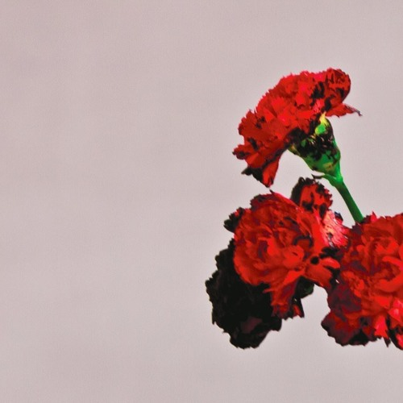

All I Need Is All Of Your Love!
How could someone so tall love someone so small?
- In Spite Of Ourselves- John Prine with Iris DeMent
- Sold (The Grundy County Auction Incident)- John Michael Montgomery
- Helena- The Misfits
- No Children- The Mountain Goats
- Queen Of My Double Wide Trailer- Sammy Kershaw
- All Your'n- Tyler Childers
- Lady May- Tyler Childers
- Forever And Ever, Amen- Randy Travis
- Deeper Than The Holler- Randy Travis
- Simple- Flordia Georgia Line
- Annie's Song- John Denver
- Body Like A Back Road- Sam Hunt
- Ain't No Sunshine (When She's Gone)- Bill Withers
- Perfect- Ed Sheeran
- More Than Words- Extreme
- All of Me- John Legend
- You're Still the One- Shania Twain
Track List
In Spite of Ourselves- John Prine and Iris DeMent
Watch Video Now!
Sold (The Grundy County Auction Incident)- John Michael Montgomery

Watch Video Now!
Helena- The Misfits
Watch Video Now!
No Children- The Mountain Goats

Watch Video Now!
Queen Of My Double Wide Trailer- Sammy Kershaw

Watch Video Now!
All Your'n- Tyler Childers
Watch Video Now!
Lady May- Tyler Childers

Watch Video Now!
Forever And Ever, Amen- Randy Travis

Watch Video Now!
Deeper Than The Holler- Randy Travis

Watch Video Now!
Simple- Florida Georgia Line
Watch Video Now!
Annie's Song- John Denver

Watch Video Now!
Body Like A Back Road- Sam Hunt
Watch Video Now!
Ain't No Sunshine (When She's Gone)- Bill Withers
Watch Video Now!
Perfect- Ed Sheeran

Watch Video Now!
More Than Words- Extreme

Watch Video Now!
All Of Me- John Legend

Watch Video Now!
You're Still The One- Shania Twain

Watch Video Now!
Back To Top